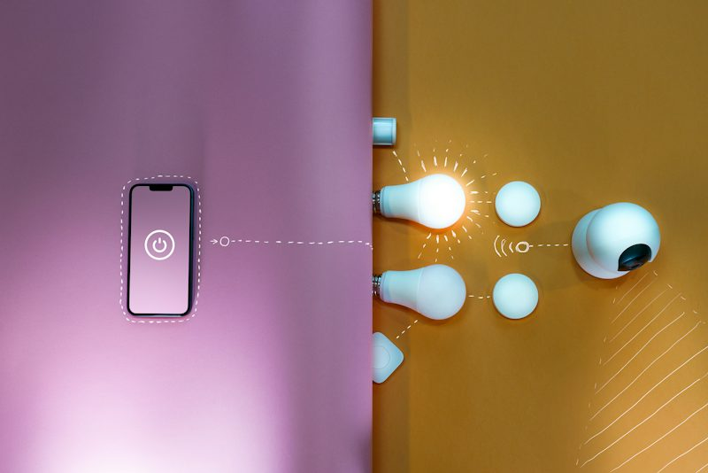
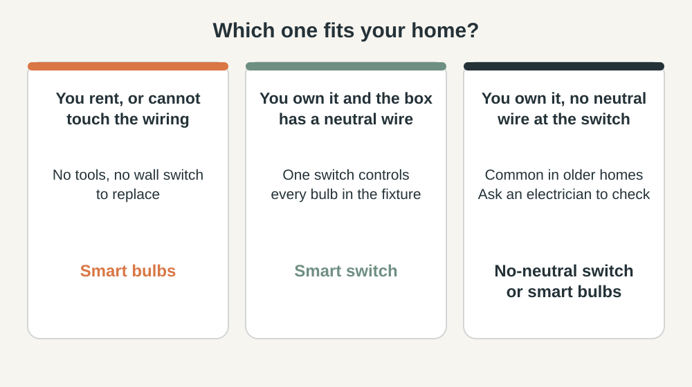
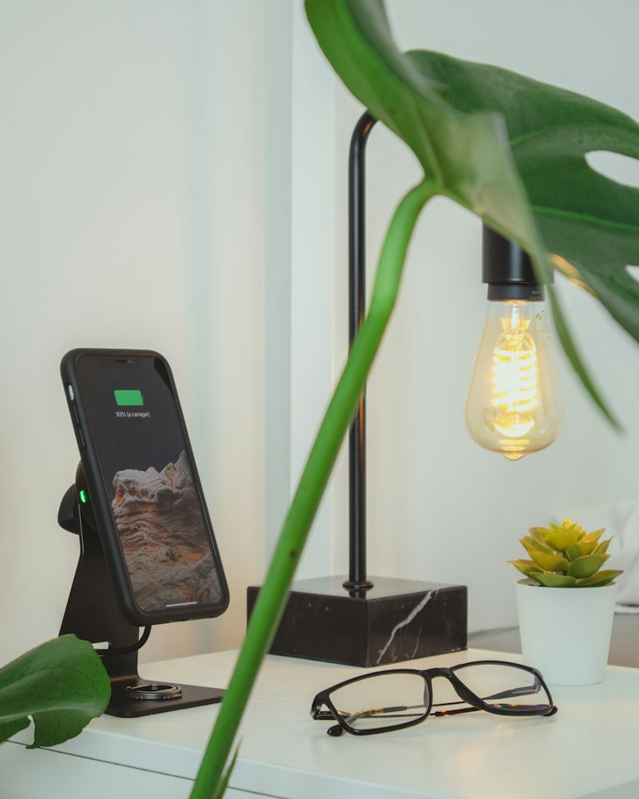

SMART HOME · LIGHTING
Smart Bulb or Smart Switch? How to Choose
Both make a light smart. They fail in different ways, cost differently and suit different homes. This guide helps you choose in about five minutes.

Short answer: renting, or cannot touch the wiring? Use smart bulbs. Own the home, have a neutral wire at the switch and several bulbs on one fixture? A smart switch is usually cheaper and keeps the wall switch working. Not sure about the neutral? Do not open the box to find out (see section 2): use smart bulbs, or have an electrician check.

Which one fits your home?
| Your situation | Best choice | Rough cost | Watch out for |
|---|---|---|---|
| Renting, or you cannot touch the wiring | Smart bulbs | About $10–$30 per bulb, up to about $50 for premium colour (UK roughly £7–£50) | The wall switch must stay on. Add a switch cover or a wireless remote. |
| Table or bedside lamp, in any home | One smart bulb (or a smart plug for a lamp you only need on or off) | One bulb, about $10–$30 | Nothing to wire. Match the bulb base and brightness to the lamp. |
| Several bulbs on one fixture or circuit (chandelier, recessed lights) | One smart switch or dimmer, with ordinary compatible bulbs | Example: 6 recessed lights = one switch at about $25–$70, against 6 smart bulbs at about $60–$180 | Needs wiring work inside the switch box and, usually, a neutral wire (section 2). |
| Two switches control one light (3-way) | Easiest: smart bulbs, with both switches left on. A smart 3-way switch only works with the maker's matching companion switch. | A 3-way smart kit usually costs more than a single switch | Do not fit a single-switch model on a 3-way circuit. Check the product listing for 3-way support. |
| No neutral wire at the switch | Smart bulbs, or a no-neutral switch whose maker lists your bulbs | Switch about $25–$70. Having an electrician add a neutral often costs several hundred dollars. | LED flicker or ghosting (section 3). Price ranges are rough and vary by country. |
Important: a neutral wire is not the same as the earth/ground wire. Wire colours and box layouts vary, and the presence of a neutral cannot be safely confirmed from a wall plate alone.
1. Smart bulb or smart switch: the difference
- Smart bulb. The intelligence is in the bulb. Screw it in and pair it. Many models offer colour. The wall switch must stay on, or the bulb cannot respond.
- Smart switch or dimmer. Replaces the wall switch and controls the power to the whole fixture. It works with ordinary bulbs, but it cannot change their colour, and installing it means working inside the switch box.
2. Check for a neutral wire first
Most smart switches need a neutral conductor in the switch box to power their electronics while the light is off. Some models are specifically designed to work without one, but they may have LED flicker, ghosting, minimum-load or compatibility limits. The neutral is a circuit conductor, not the bare/green earth (ground) wire. Age of the home is only a clue, not proof that a neutral is absent. Do not remove the wall plate or handle exposed wiring just to check, and do not guess.
Safer ways to find out without opening the box:
- Read the switch maker's product page or support pages for the wiring it needs, and ask their support if the listing is unclear.
- Ask a licensed electrician to check one switch box. It is usually a short visit, and the answer often applies to similar boxes in the same house. Photograph the result for later.
- Until you know, choose smart bulbs, or a no-neutral switch whose maker lists your bulbs, instead of a switch that needs a neutral.
Electrical safety: replacing a switch means working with mains wiring. Turn off the correct circuit and verify it is de-energized with a suitable tester before any work; a wall switch being off is not enough. If you are unfamiliar with safe isolation, cannot identify the conductors, find unexpected wiring, or are unsure whether a neutral is present, do not proceed—hire a licensed electrician and follow local rules.
3. Know the no-neutral trade-offs
No-neutral products draw their standby power through the light itself. Power Integrations, a chip maker for these switches, explains that this works for old incandescent bulbs, but with LEDs the leaked current can cause flicker or a faint glow called ghosting. For example, Lutron lists its Caseta dimmer as needing no neutral, needing a hub (the Smart Bridge), and handling up to 150 W of dimmable LED or CFL, or 600 W of incandescent or halogen.
- Add up the wattage of the bulbs on the switch and stay below the rating.
- Use bulbs labeled dimmable, and check the switch maker's compatibility list.
- Do not fit a motor load such as a ceiling fan to a light dimmer.
UK example: in many UK homes the lighting circuit is wired as a loop at the ceiling rose, so the switch box holds only two wires (a live and a switched live) and no neutral. There the usual options are smart bulbs, or a two-wire smart switch that lists your bulbs and its minimum load. Do not assume either way: some newer installations do bring a neutral to the switch, so have it checked by a qualified electrician.
4. Combine them where it makes sense
Many homes use both: smart switches for overhead lights, smart bulbs for bedside lamps where you want a warm, low glow.

If you use smart bulbs, stop the wall switch being flipped by mistake. A switch cover or a wireless remote keeps the bulb powered. See our guides to evening lighting and motion lighting.
5. Wi-Fi, hub, Zigbee or Matter?
Smart bulbs and switches reach your phone in one of three ways. Wi-Fi devices join your router directly: no hub and the simplest start, but each one is another device on your network. Hub-based systems (Zigbee, Z-Wave, or a maker's own radio such as Lutron Caseta's) need a bridge, an extra purchase, but often keep working locally if the internet drops. Matter is a shared standard that lets devices from different brands work with Apple, Google and Amazon apps. It runs over Wi-Fi or Thread, and Thread usually needs a compatible border router such as some smart speakers or hubs, so check which one a device uses.
For a few bulbs, Wi-Fi is fine. For a whole house, pick one system before you buy, so everything stays in one app.
6. Check the standby cost before you add bulbs
Smart devices keep a radio awake to hear commands, so they draw a little power even when the light is off. ENERGY STAR says certified smart lighting uses less energy both on and in standby, and IEA 4E notes that smart lamps need power for standby and gateways. The figure is on the spec sheet under "standby power" or "networked standby".
The formula: standby watts × 24 × 365 ÷ 1,000 = kWh per year. As an example, 0.5 W per bulb is about 4.4 kWh a year per bulb, or about 44 kWh for ten bulbs. Multiply by your electricity rate to see the cost. A fixture with five sockets needs five smart bulbs but only one smart switch, so the switch usually means one standby draw instead of five. Keep smart bulbs for lights you actually automate.
7. Run the router-off test
Before you trust a setup, run this ten-minute test.
- Switch off your Wi-Fi router or unplug it.
- Turn the light on and off using the wall switch, the wireless remote and any physical dimmer.
- Ask someone who never uses the app to do the same without help.
- Plug the router back in and check that schedules resume on their own.
If the light cannot be controlled without the internet, fix that before you add more devices.
8. Before you buy
- Start with one room and one annoyance, such as a dark hallway at night, and test for a week before adding more.
- Keep a normal way to turn the light on, so guests and family are never stuck.
- Confirm the exact switch model supports your wiring, bulb type and total load. Never put a smart bulb behind a conventional dimmer unless the bulb maker says that is supported.
- If you are unsure about the neutral, line or load conductors, use a licensed electrician.
This guide is general information, not professional electrical advice. Local rules differ.
Frequently Asked Questions
Do smart switches need a neutral wire?
Most do, because the switch needs constant power to stay connected. Some models, such as Lutron Caseta dimmers, are sold as working without one. Check the product listing before you buy.
Can I use a smart bulb on a normal dimmer?
Avoid it. A smart bulb manages its own brightness, so a dimmer in front of it can cause flicker or stop it responding. Leave the wall switch on and control the bulb with the app, voice or a wireless remote.
What happens to smart bulbs if someone flips the wall switch off?
The bulb loses power and cannot respond to the app, voice or schedules until the switch is on again. A switch cover or a wireless remote stops this.
Why do my LED bulbs glow faintly when switched off?
This is called ghosting. It can happen when a no-neutral smart switch leaks a small current through the load. Low-power LED bulbs are the most likely to show it, so check the switch maker's compatibility list.
Can I install a smart switch myself?
Only if you are comfortable isolating a circuit safely. Turn the power off at the breaker and confirm it is dead with a tester before touching anything; a wall switch being off is not enough. If you cannot identify the wires, find no neutral, or see anything unexpected, stop and hire a licensed electrician. Smart bulbs need no wiring. Local rules differ.
Sources and last review
Last reviewed: October 11, 2026. Product specifications come from manufacturer listings. Prices are rough US and UK ranges that change; check current listings. Check your own model and local electrical rules before installing.
- Lutron Caseta Wireless dimmer product listing (Lowe's)
- Power Integrations: no-neutral wireless wall switches
- AJ Long Electric: smart switches vs smart bulbs
- ENERGY STAR: Smart Lighting
- IEA 4E: Smart Lighting, new features impacting energy consumption
- eceee 2015: Not so clever when they are off, standby power use in smart lamps